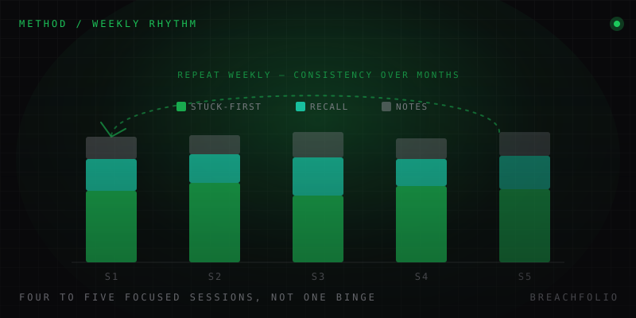

How to actually learn cybersecurity (without burning out on tutorials).
Watching a hundred hours of walkthroughs feels like progress. It mostly isn't. Here's what active learning looks like in this field, and a weekly rhythm that survives past month two.
There's a specific failure mode that shows up so often it has a name: tutorial hell. You find a walkthrough for a machine or a challenge, you watch it, it makes sense, you feel like you learned something, and then you queue up the next one. After a hundred hours of this, you sit down in front of a slightly different box, one nobody has recorded a video for, and you freeze. Not because you didn't pay attention. Because you never actually built the thing that was supposed to be built. You memorized someone else's keystrokes on someone else's problem, and keystrokes don't transfer. The underlying model – the reasoning that produced those keystrokes – was theirs, not yours, and it stayed theirs.
This isn't a discipline problem or a laziness problem. It's a mismatch between the activity (watching) and the skill you're actually trying to build (diagnosing). The two feel similar from the inside – both involve information entering your head about security topics – but only one of them trains the thing that gets tested later.
Why passive learning fails here specifically
Compare this to learning history. If you watch a documentary about the fall of the Roman Empire, you come away knowing more history – passive absorption of facts and narrative is close enough to the actual skill being built (knowing history) that the method roughly matches the goal. Cybersecurity doesn't work that way. The skill being tested – in a CTF, in an interview, during a real incident at 2am – is diagnosis under uncertainty: here is a system behaving strangely, here is a partial set of clues, figure out what's actually happening and what to do about it. Nobody hands you the answer key during an incident. Watching someone else perform that diagnosis, however clearly they narrate it, exercises your ability to follow an explanation. It does not exercise your ability to produce one from nothing, which is the actual job.
This gap is invisible while you're watching, which is exactly what makes it dangerous. A well-made walkthrough produces the same subjective feeling as genuine understanding – nodding along, "oh that makes sense" – right up until you're the one holding the shell with no narrator.
What active learning actually looks like
The fix is uncomfortable and it's the whole point: before you watch a walkthrough for any challenge, get genuinely stuck on it yourself, with nothing to guide you but your own reasoning. In practice that means following the same sequence every time:
- Before opening any walkthrough, commit to a fixed block of time – twenty-five to forty-five minutes is a reasonable range – with nothing to guide you but your own reasoning.
- Stay actively stuck: form a hypothesis, test it, watch it fail, and form the next one. That process, including and especially the wrong hypotheses, is the training stimulus: not a failure state to minimize, but the workout itself.
- Only once the timer runs out, open the walkthrough, and resist the urge to copy commands straight into a terminal.
- Read the reasoning, then close the writeup and re-derive the commands yourself from the logic it described.
- Check what you actually absorbed: if you can reproduce the technique from the explanation without looking back, you absorbed the reasoning. If you can only reproduce it by looking at the exact syntax again, you absorbed a string, and strings don't generalize to the next box.
The muscle being built here is exactly the one that has no writeup available in a live incident.

Spaced repetition for the boring-but-load-bearing stuff
Not everything in this field is a reasoning skill, and it's worth separating the two categories cleanly.
| Category | Examples | Best method |
|---|---|---|
| Recall knowledge | Port numbers, CVE/vulnerability classes, Linux command syntax, OSI layers | Spaced repetition (flashcards) |
| Diagnostic reasoning | Enumeration strategy, privilege escalation paths, incident triage | Get-stuck-first practice |
You don't reason your way to "port 445 is SMB," you just need to know it, instantly, the way you know a phone number. This is exactly the kind of material that spaced repetition: flashcard-style review scheduled at increasing intervals, the same general technique language learners use for vocabulary – is genuinely good at, and there's no need to endorse a specific app to benefit from the idea. Build a deck, review it in short daily sessions, and let the scheduling algorithm handle what most self-taught people handle badly: re-exposure timed just before you'd otherwise forget. Trying to build this recall layer through the same "get stuck and reason it out" method as diagnosis skills is a waste of the technique in both directions – you can't reason your way to a memorized fact, and drilling flashcards won't teach you to diagnose an odd process tree.
CTFs and guided platforms
Guided, gamified hands-on platforms – TryHackMe- and HackTheBox-style environments – and CTF competitions are a genuinely good place to do the "get stuck yourself" work described above. Their real value is that they're a safe, legal, bounded environment to practice enumeration and exploitation against machines built specifically to teach a technique, with no risk of touching a system you don't own. That's not a small thing; it's most of why these platforms exist and why they're worth your time.
Their real limit is equally important to understand going in: these environments train you to solve a designed puzzle. Someone built the box with a specific path in mind, seeded specific clues, and calibrated the difficulty. That's adjacent to real-world investigation, but it isn't identical to it: a real incident, or a real pentest engagement, wasn't constructed to have a findable solution at all. This is exactly why building and breaking your own home lab is a valuable complement rather than a redundant one: a lab you set up yourself, with services you configured, has no designed solution and no author who knows the intended path. When something breaks in your own lab, you're doing the messier, less scaffolded version of the same diagnostic work – closer to what the job actually asks for.
A realistic weekly rhythm
The structure that tends to survive past the first couple of months is a fixed number of focused sessions spread across the week, rather than a single marathon weekend binge – something like four to five sessions of sixty to ninety minutes, each with one specific target:
- One challenge worked through properly, using the stuck-first method above.
- One flashcard review, covering the recall-only material described above.
- One short block of reading or notes.
That beats a Saturday spent watching six hours of videos back to back. The marathon session feels more productive in the moment because more time was visibly spent, but very little of it involved the actual training stimulus; most of it was passive intake.
This matters more than it sounds like it should, because of what actually causes people to quit. The field rewards consistency compounding over months far more than it rewards intensity compressed into a single week. Treating the first month like a sprint – long sessions, high intensity, little recovery – is the single most common reason people burn out and disappear around month three, right around when the initial novelty wears off and the actual grind of recall-building and slow diagnostic practice sets in. A sustainable weekly rhythm is not the "less serious" option. It's the one that's still running in month six, which is the only version that produces a real skill.
Writeups and communities without becoming dependent on them
Other people's writeups and community discussion are useful for exactly one thing: checking your own reasoning after you've already done the work, not shortcutting past doing it. There are two forcing functions worth using deliberately here, and neither is a shortcut around doing the work yourself:
- Read a writeup as a second opinion on a conclusion you already reached yourself, not as a substitute for reaching one. If your reasoning diverged from theirs, that divergence is more informative than the writeup's content – it tells you precisely where your mental model is wrong, which is exactly the information you need and exactly the thing you can't get by reading a solution before attempting the problem.
- Try to explain what you just learned to someone else – a study partner, a forum post, or even a private notes file you never show anyone – in your own words, without referring back to the source. Teaching, or writing something down as though you were about to teach it, exposes gaps that passive review hides completely. It's uncomfortable in the same way being stuck on a challenge is uncomfortable, and for the same reason: it's the part where you find out what you actually know versus what you merely recognize.
All of this assumes you already know roughly what order to learn things in – networking before web exploitation, Linux before privilege escalation techniques, and so on. If that "what order" question is still open for you, our real cybersecurity roadmap covers it directly; this piece is the "how" companion to that "what order" one, and the two are meant to be read together rather than in isolation.
Frequently asked questions
What is tutorial hell and how do you avoid it?
How does active learning differ from watching walkthroughs in cybersecurity?
What is spaced repetition and why does it help in cybersecurity?
How many hours a week should you study cybersecurity?
Daniel A. and Óscar S. run Breachfolio, a small independent site about security and AI. This article was drafted with AI assistance and reviewed by a person before it went live. We write from documentation, vendor sources and published research rather than from original lab benchmarks, and we link a source in the sentence that relies on it. How we work · About us